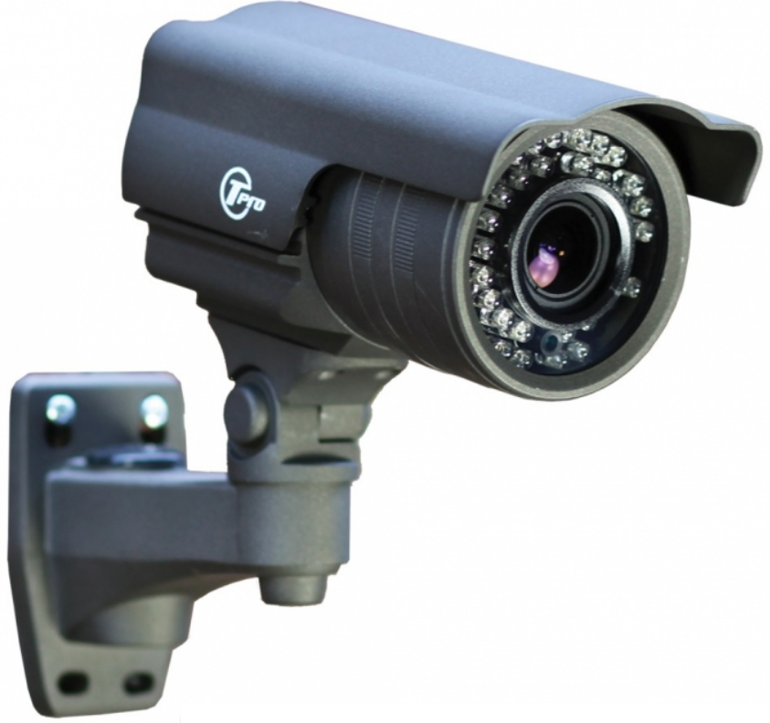
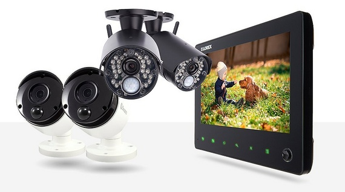
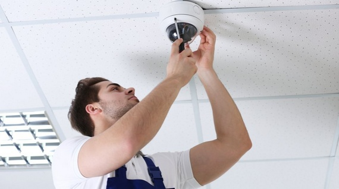

Secure
Why be uneasy each time you live your premises whether home or business, when you can know what's happening withing your premises at any time with a touch of a button.

CCTV Cameras
There are a number of different security systems available in the market and people who want to increase the security of their property are often torn between these options. At Blue Wave, we always encourage property owners to consider installing CCTV cameras. These cameras are effective security tools as they can monitor the activity on your property. If you’re concerned about the security of your property, don’t hesitate to give us a call. Our experienced team will plan the layout, Inform you on the benefits of say having a connection though the internet on your mobile phone over connecting to the TV or separate monitor and carry out the CCTV camera installation efficiently.
What are CCTV cameras?
CCTV stands for Closed Circuit Television and it is one of the most commonly used security solutions today. This system consists of a number of cameras mounted in a closed circuit system and the feed from these cameras can only be accessed by a dedicated security station. These cameras are placed in strategic locations across the property to monitor activity. The number of cameras on a property depends on its size, number of access points, traffic, and various other factors. Here are some of the different components of a CCTV system:
- CCTV cameras.
- Wires connecting all of the cameras in a single circuit.
- Monitors or TVs to display the video feed coming from the cameras.
- Storage to keep all the information coming from the CCTV cameras for future use.
What are the benefits of CCTV cameras?
Some people hesitate to invest in a CCTV camera system because they’re uncertain of its value and benefits. Here are some of the biggest advantages of installing CCTV cameras on your property:
- These cameras act as a deterrent as criminals will hesitate to enter a property that’s has CCTV camera coverage.
- The cameras can be used to monitor everyday activities. This can prove to be advantageous in office and commercial environments.
- These cameras will capture evidence of intrusions, theft, and other such criminal activities and that can help with your case down the line.

Our experienced team can help you create the ideal video surveillance system at a competitive price. You can enjoy peace of mind knowing your home is secure despite falling alarm response rates. You can take monitoring of your home to the next level with our home automation services. This would enable you to monitor real-time video from any Windows PC, Mac or any mobile phone. See whether someone is in your home before entering and help authorities identify intruders if the worst does happen.

Why choose us to install CCTV cameras?
- We’re a licensed and certified company. All our installers, estimators, and technicians are registered with the respective country’s police.
- All the cameras we install of manufactured by well-established and trustworthy companies. They deliver clear and HD quality feed and use the latest technology.
- We have over 15 years of experience in this industry and have worked on all kinds of CCTV installation projects. We can handle residential and commercial installations easily.
- We don’t charge any call-out fee for our services so you don’t need to worry about additional expenses.
- Clients speak with our technicians directly instead of speaking with someone in our booking office.
- We provide detailed and accurate quotes with no hidden costs after our first inspection.
If you want to know more about our CCTV cameras installation services at Blue Wave, just get in touch with us. You can use our contact us form or call us on 0.800.929.7878 and we’ll be happy to answer any questions you might have.